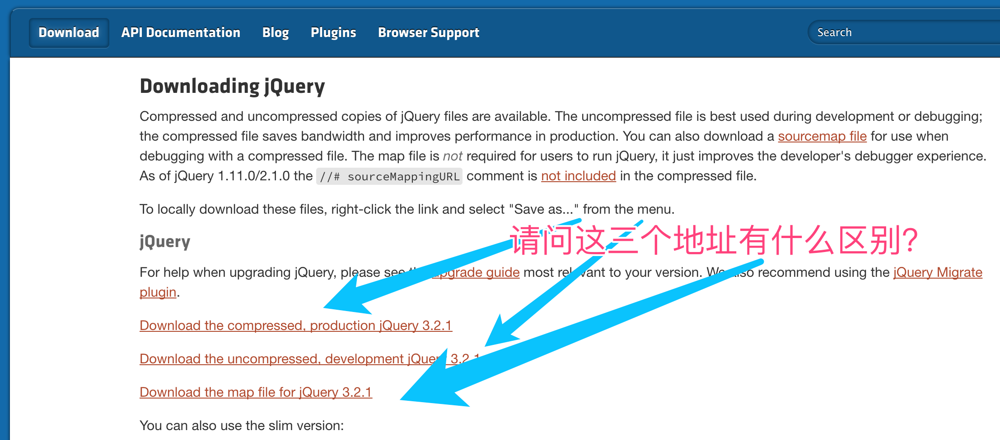

在官网下载jquery, 然后给文件取一个名字例如jquery3.3.1.js
使用script标签引入这个js,就可以在文档中使用了
注意!在下载的时候有三个地址，
一般我会下载第一个进行引用，因为第一个jQuery文件最小，加载快
如何使用 jQuery 获取页面中 id 为 xxx 的元素
很简单使用
$('#xxx')
下面这段代码可以实现点击这个button，弹出一个提示框，内容为欢迎你！
<button> id="xxx">按钮</button>
<script>
$('#xxx').onclick=function(){
alert('欢迎你')
}
</script>